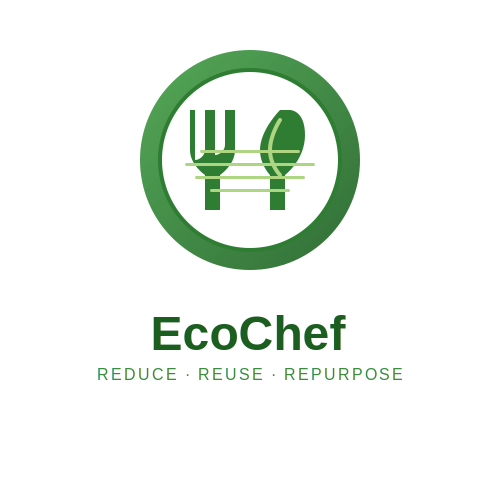

EC
'">
EcoChef Project Files
Welcome, User
Logout
UML Diagrams
Select a diagram to view
Use arrow keys to navigate diagrams
Technical Documentation
Project Technical Documentation
Download PDF
Your browser doesn't support iframes. Please download the PDF instead.